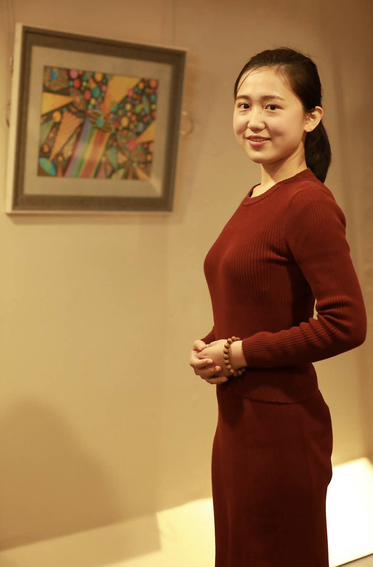
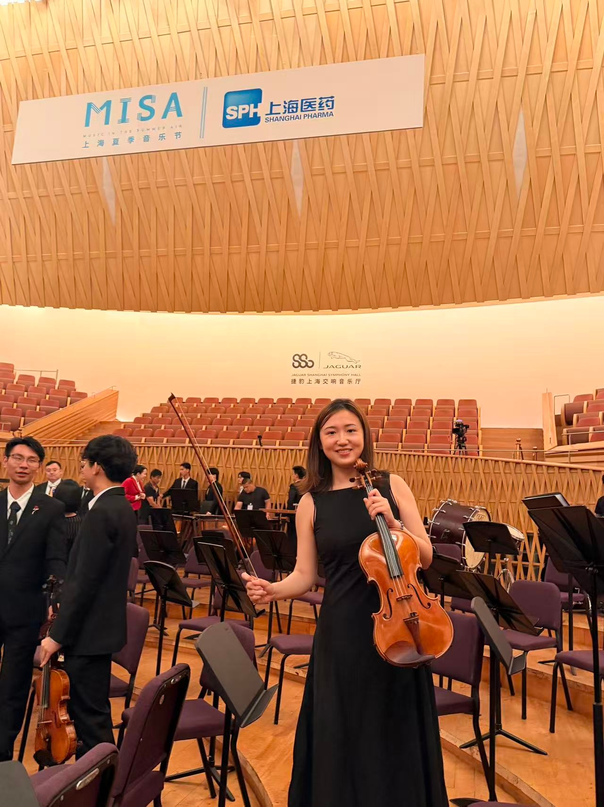

Viola ZHENG
郑 妍 佳
VIOLIST · 中提琴演奏
弦上十年,
与乐同行。
活跃于校园、职业与跨界乐团的青年中提琴手。
从上海交大管弦乐团,到南洋理工、再回到交大校友乐团,
用琴弓记录每一段与音乐相遇的旅程。
0+
交响乐团演出
0+
重奏表演
0年
舞台经验

Viola ZHENG · 郑妍佳
I.
演奏经历
点击展开详情-
2024 — 至今
上海交通大学校友乐团
中提琴声部骨干回到起点,以校友身份继续与乐团并肩,参与年度校友音乐会与校园开放日演出。
返校重聚的乐团日常 — 把大学时代对音乐的热爱延续到毕业后的人生里,与老朋友再同台。点击查看 -
2020 — 2021
南洋理工大学 (NTU) 中提琴声部
声部成员赴新加坡深造期间加入校级管弦乐团,与来自不同国家的乐手合作,体验多元音乐文化。
在 NTU 期间随团参与新加坡本地多场演出,拓展了与亚洲多国乐手同台的视野。点击查看 -
2015 — 2019
上海交通大学管弦乐团
中提琴声部骨干 · 声部副首席从大一的新生到中提琴声部副首席,四年间参与乐团几乎所有重要演出与比赛。
在声部副首席任期内协助组织声部训练、安排排练与演出事务,带领声部完成多场大型交响乐演出,亦参与筹备上海学生交响乐联盟交流活动。点击查看
II.
登台过的音乐厅
部分 · 滑动查看上海东方艺术中心
SHANGHAI · OAC
捷豹上海交响音乐厅
SHANGHAI · SSO HALL
上海音乐厅
SHANGHAI · CONCERT HALL
III.
合作乐团
PROFESSIONAL ENSEMBLES
上海爱乐乐团
SHANGHAI PHILHARMONIC
上海城市交响乐团
SHANGHAI CITY SO
慕尼黑工业大学交通乐团
TU MUNICH
上海交通大学管弦乐团
SJTU ORCHESTRA
IV.
合作过的指挥 & 音乐家
CONDUCTORS & SOLOISTSC.P.
曹 鹏
Conductor
中国
L.Y.S.
林友声
Conductor
中国
Z.J.M.
张洁敏
Conductor
中国
W.Y.B.
吴一波
Conductor
中国
M.D.L.
宓多里
Violin · Soloist
日本 🇯🇵
V.
参加过的音乐节
MUSIC FESTIVALSI
上海辰山草地广播音乐节
CHENSHAN LAWN MUSIC FESTIVAL · SHANGHAI
SHANGHAI
II
上海夏季音乐节 (MISA)
MISA · MUSIC IN THE SUMMER AIR · SHANGHAI
SHANGHAI
III
上海之春国际音乐节
SHANGHAI SPRING INTERNATIONAL MUSIC FESTIVAL
SHANGHAI
VI.
获奖经历
AWARDS2018
大学生艺术展演
中华人民共和国教育部 · 全国最高规格大学生艺术赛事
金奖
VII.
舞台瞬间
ON STAGE
MISA · 上海夏季音乐节
"On the stage where the city listens."
PORTRAIT
十年的琴与弦
VIII.
独奏片段
SOLO RECORDINGViola
Solo
Solo
2025
PRIVATE RECORDING · 2025
Adagio · 中提琴独白
一段慢板,关于等待与重逢
0:00 / 0:00
以连弓与抒情揉弦构建如泣如诉的旋律线,弹性速度赋予呼吸感。
强弱对比鲜明,展现对弓弦张力与情绪层次的细腻控制。